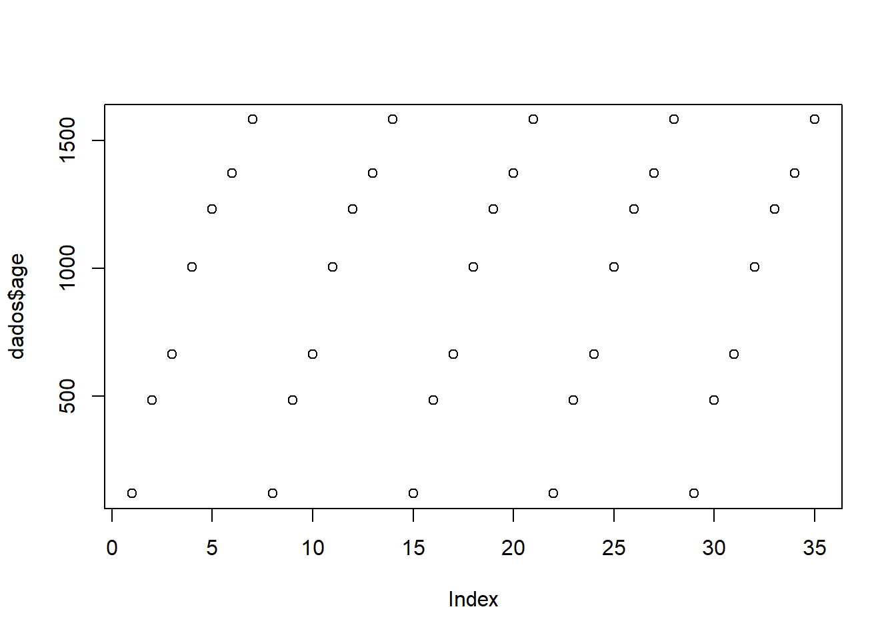

Code
a <- 1
a [1] 1Code
b <- 2
b[1] 2Code
c <- a+b
c[1] 3Este é um caderno de aulas da disciplina FIP 606 - Análise e visualização de dados em Fitopatologia. Ministradas por Emerson Del Ponte no primeiro semetre do ano de 2025.
Este caderno tem como finalidade auxiliar aos alunos da disciplina a organizarem os estudos e a partir de sua disponibilização no site, pode ser utilizados por outras pessoas que busquem aprender sobre alguns testes ou funcionalidades do R.
É importante pontuar que são apenas scripts e anotações de aula. Sempre busque aprofundar seus conhecimentos em outras fontes.
Antes de iniciar, aqui vão algumas sugestões de leitura que podem ajudar no processo de aprendizado:
Todos os livros acima são materiais mais iniciantes.
Caso você seja da área de agrárias e se interesse pelo tema, recomendo fortemente a leitura do livro “R for Plant Disease Epidemiology”.
E por fim, livros da companhia “O´Reilly”, tem várias E-books interessantes tanto para a linguagem R, quanto para outros programas como Phyton, por exemplo.
Dito isso, vamos começar!
Neste chunk temos um exemplo de como criar objetos onde serão atribuidos valores.
Para criar objetos, inicialmente criamos um nome para o objeto, seguido dos simbolos “<-”, que é um sinal de atribuição. No exemplo abaixo criamos o objeto “a”, onde a recebeu o valor 1.
a <- 1
a [1] 1b <- 2
b[1] 2c <- a+b
c[1] 3um * deixa em itálico ou (Ctrl+i); para negrito (Ctrl+b); para inserir link (Ctrl+k); para inserir novo chunk (Ctrl+alt+i); usar “” para sinalizar que é texto e não uma função.
Para explicar mais funções iniciais, vamos importar um conjunto de dados do próprio R.
No exemplo abaixo vamos criar o objeto “dados” e usando a função que vimso acima, vamos atibuir a ele o conjunto de dados Oranje, que são dados agrupados de um conjunto de dados do R.
Orange Tree age circumference
1 1 118 30
2 1 484 58
3 1 664 87
4 1 1004 115
5 1 1231 120
6 1 1372 142
7 1 1582 145
8 2 118 33
9 2 484 69
10 2 664 111
11 2 1004 156
12 2 1231 172
13 2 1372 203
14 2 1582 203
15 3 118 30
16 3 484 51
17 3 664 75
18 3 1004 108
19 3 1231 115
20 3 1372 139
21 3 1582 140
22 4 118 32
23 4 484 62
24 4 664 112
25 4 1004 167
26 4 1231 179
27 4 1372 209
28 4 1582 214
29 5 118 30
30 5 484 49
31 5 664 81
32 5 1004 125
33 5 1231 142
34 5 1372 174
35 5 1582 177dados <- Orange
dados Tree age circumference
1 1 118 30
2 1 484 58
3 1 664 87
4 1 1004 115
5 1 1231 120
6 1 1372 142
7 1 1582 145
8 2 118 33
9 2 484 69
10 2 664 111
11 2 1004 156
12 2 1231 172
13 2 1372 203
14 2 1582 203
15 3 118 30
16 3 484 51
17 3 664 75
18 3 1004 108
19 3 1231 115
20 3 1372 139
21 3 1582 140
22 4 118 32
23 4 484 62
24 4 664 112
25 4 1004 167
26 4 1231 179
27 4 1372 209
28 4 1582 214
29 5 118 30
30 5 484 49
31 5 664 81
32 5 1004 125
33 5 1231 142
34 5 1372 174
35 5 1582 177Aos objetos ou data frames (conjunto de dados), podemos aplicar funções, para executar ações. Como é o exemplo da função plot(). Esta função é básica do R e serve para plotar gráficos que permitem visualizar os dados de forma gráfica para uma análise visual rápida. Lembre-se que, não basta chamar a função, o seu objeto/data frame deve estar dentro de “()” para que a função seja executada.
plot(dados)
Mas para visualizar os dados de maneira correta é importante saber o que voce precisa/quer visualizar. Ao chamar “dados” podemos observar que o data frame é composto por 3 colunas: Tree, age, circunference. Podemos então utilizar outras funções para nos auxiliar.
plot(dados$circumference) 
plot(dados$Tree) 
plot(dados$age)
Acima utilizamos o sinal “$”, utilizado para isolar um vetor de dados específico do data frame.
Podemos criar um novo objeto e atribuir a ele o vetor de dados isolado.
Ou, podemos utilizar a função “attach” para desagregar o data frame e criar vetores independentes.
Bônus: a função “detach” é o oposto da função anterior.
circ <- dados$circumference
circ [1] 30 58 87 115 120 142 145 33 69 111 156 172 203 203 30 51 75 108 115
[20] 139 140 32 62 112 167 179 209 214 30 49 81 125 142 174 177#ou
attach(dados)
circumference [1] 30 58 87 115 120 142 145 33 69 111 156 172 203 203 30 51 75 108 115
[20] 139 140 32 62 112 167 179 209 214 30 49 81 125 142 174 177Os chamados “pacotes” no R são um conjunto de funções, ferramentas (ou como vimos acima, dados) prontos, que forma criados (ou já vem no R base). São utilizados para realizar atividdaes especificas no R, como plotar gráficos personalizaveis, como é o exemplo do pacote “ggplot2”.
Inicialmente utilizamos a função “library()”, para ativar/carregar o pacote. Caso o pacote ainda não esteja instalado em sua biblioteca, utilizamos a função “install.packages()” para que o pacote seja instalado.
Neste exemplo ativaremos o pacote “agricolae”, que é uma ferramenta para análise estatistica para pesquisa com experimentos agrícolas.
#install.packages("agricolae")
library(agricolae)
dates <- c (7,14,21,28,35,42)
dates[1] 7 14 21 28 35 42severity <- c (0.1, 5, 10, 35, 50, 60)
severity [1] 0.1 5.0 10.0 35.0 50.0 60.0audpc (severity, dates)evaluation
910.35 #carregando outro pacote de dados/dataframe
data("corn")
str(corn)'data.frame': 34 obs. of 3 variables:
$ method : int 1 1 1 1 1 1 1 1 1 2 ...
$ observation: int 83 91 94 89 89 96 91 92 90 91 ...
$ rx : num 11 23 28.5 17 17 31.5 23 26 19.5 23 ...No chunk acima, além de ativar a biblioteca, criamos um vetor de dados numéricos. Usando a função c(). O vetor de dados armazena uma sequencia de dados.
Para o vetor de dados criado, utilizamos a função “audpc”. Este é um comando do pacote agricolae para calcular a área abaixo da curva sobre severiade de doenças ao longo do tempo.
Depois usamos o comando “str” que é um comando do pacote agricolae que é útil para verificar rapidamente a estrutura de um objeto, especialmente quando se trabalha com conjuntos de dados maiores.
O pacote “tidyverse” possui uma série de funções diferentes, que facilitam o tratamento de dados. Alguns exemplos são: pacotes para importação de dados (readr, readxl), visualização de dados (ggplot2), manipulação de dados (dplyr , tidyr), criação de modelos (tidymodels) etc.
library(tidyverse)
dates <- c (7,14,21,28,35,42)
severity <- c (0.1, 5, 10, 35, 50, 60)
#Juntando dates e severity em um objeto
data_curva <- data.frame(dates, severity)
data_curva dates severity
1 7 0.1
2 14 5.0
3 21 10.0
4 28 35.0
5 35 50.0
6 42 60.0str(data_curva)'data.frame': 6 obs. of 2 variables:
$ dates : num 7 14 21 28 35 42
$ severity: num 0.1 5 10 35 50 60Esta é a função principal do pacote ggplot2, que faz parte do pacote ativado no chunk anterior, tidyverse.
Com ele, vamos construir gráficos editaveis.
É mais uma função do pacote tidyverse, é útil para manipular dados (filtrar, selecionar, agrupar)
library(dplyr)
library(ggplot2)
data_curva |>
ggplot(aes(dates, severity))+
geom_area(fill="lightblue", alpha= 0.5)+geom_line(color= "orange", size=1)+geom_point(color="darkblue", size=2)
# explicação de alguns comandos:
#geom_area(fill = "lightblue", alpha = 0.5) muda a cor da área
#geom_line(color = "orange", size = 1) muda a cor da linha
#geom_point(color = "darkblue", size = 2) muda a cor dos pontos
#para adicionar outra variável no gráfico
severity2 <- c(1,10,35,58,70,79)
data.frame(severity2) severity2
1 1
2 10
3 35
4 58
5 70
6 79 data_curva |>
mutate(severity2 = c(1, 10, 35, 58, 70, 90)) |> # Adiciona a nova coluna aqui
ggplot(aes(dates, severity))+
geom_area(fill="lightblue", alpha= 0.5)+
geom_line(color= "orange", linewidth=2)+
geom_point(color="darkblue", size=2)+
theme_minimal()+ #muda tema do gráfico
labs(title = "Progresso da Severidade da Doença", subtitle = "Avaliação ao longo dos dias", x = "Dias após a inoculação", y = "Severidade (%)", caption = "Fonte: Experimento 2025")+ #para customizar o gráfico, eixos, títulos e etc
scale_y_continuous(limits = c (0,100))+
scale_x_continuous(limits = c (0, 44)) #para mudar a escala dos eixos
O comando “|>” é conhecido como “pipe” e serve para encadear funções, facilitando a leitura e a organização do código. É útil para manipular dados em sequência, sem a necessidade de variáveis intermediárias. Ele permite que o resultado de uma expressão do lado esquerdo seja automaticamente passado como o primeiro argumento da função no lado direito.
A função “aes()” (aesthetics) é utilizada dentro da função ggplot() para especificar como as variáveis do seu dataset são mapeadas para aspectos visuais, como: Eixos: As variáveis que serão usadas para os eixos X e Y. Cores: A variável que determina as cores dos pontos, linhas ou barras. Formas: A variável que determina o tipo de forma dos pontos (por exemplo, círculos, quadrados). Tamanho: A variável que determina o tamanho dos elementos gráficos.